Made of whole chicken, irish wrapped in banana leaves. this particular dish is served to a "muko" - a to-be son-in-law in a cultural wedding ceremony
€ 16.00
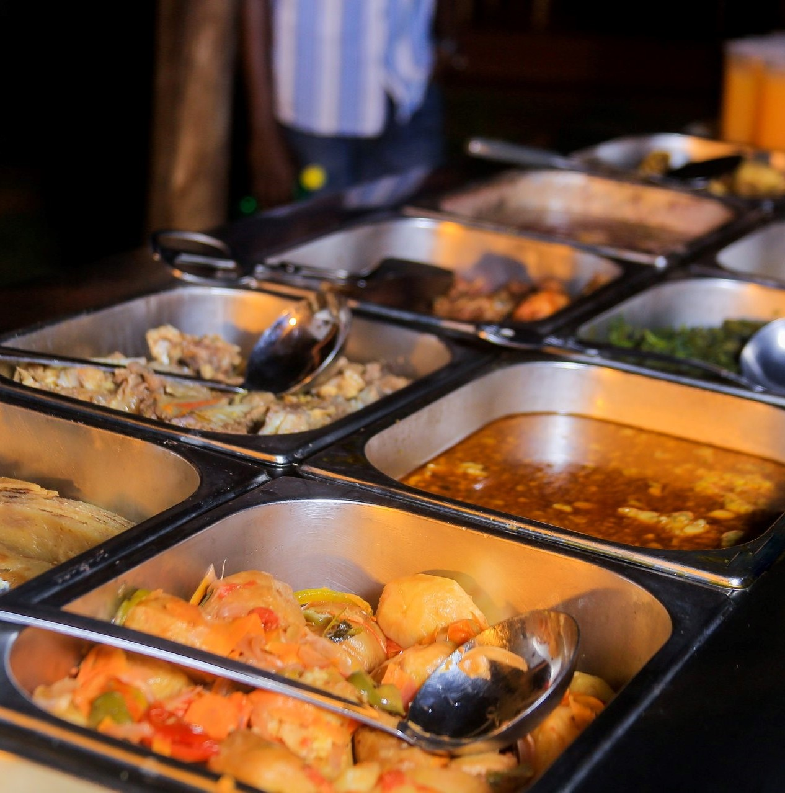
Please serve at will. We offer Chicken, beef, pork, mukene, malakwang, gobe, eboo, beans, groundnut sauce, posho, matooke, gonja, molokoni, white rice, sweet and irish potatoes, pilao, fruit and vegetable salad...
€ 17.20
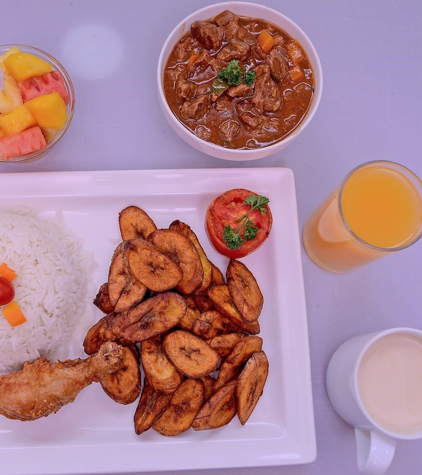
White steamed rice bowl and fired gonja slices served with thick beef stew and a chicken drumstick. On the side we offer a glass of fresh juice, african tea and a little fruit salad
$00.00
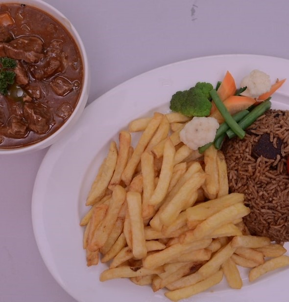
The brown color of the pilau comes from caramelizing the onions, browning the meat . Comes with half rice/ half french fries Served with Thick beef stew and vegetables on the side
€ 5.00
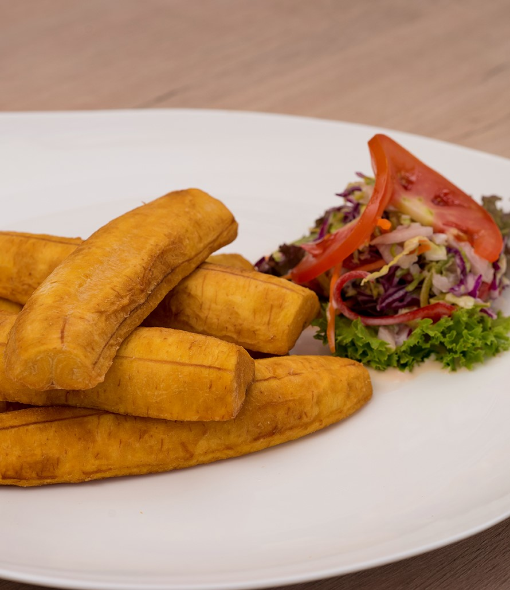
Gonja is a firm and prominent member of the plantain family. It is well deep fried and served as a snack as well as part of a main course meal
€ 2.10
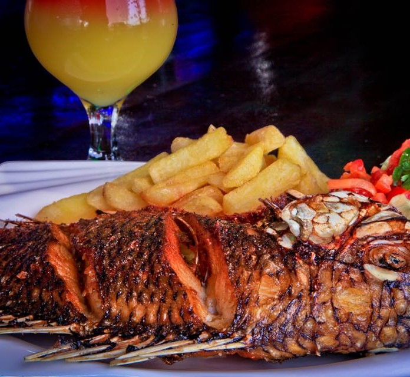
Comes with medium sized deep-fried Tilapia and french fries, ketch-up and vegetable salads + cocktail Juice
€ 9.60
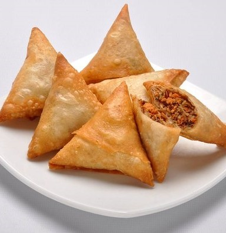
Much loved pastry by the Indian community who once populated Uganda, before they oust by Idi Amin. Filled with spiced, cooked minced beef, its a good snack in public events
€ 1.20
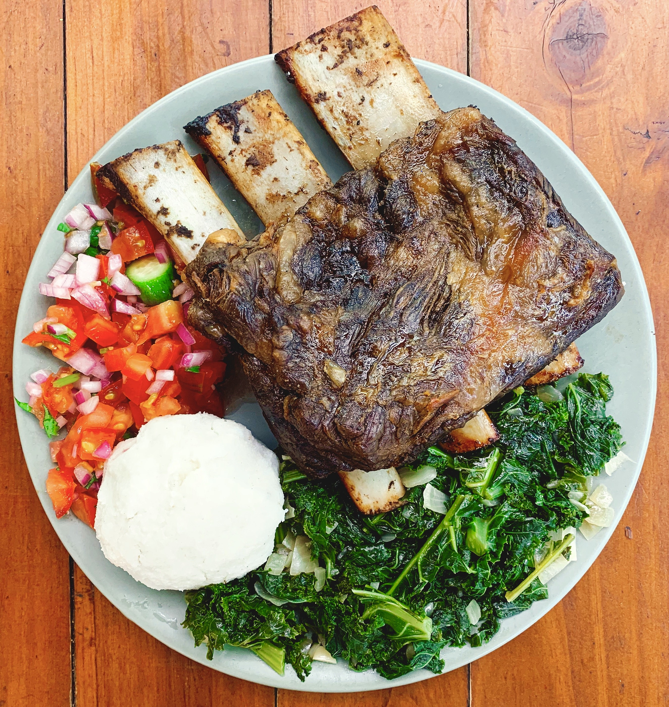
The expression nyama choma means "barbecue meat" (goat/beef) in kiswahili. Served with local beer and side dishes such as ugali (posho), green vegetables and other salad.
€ 7.30
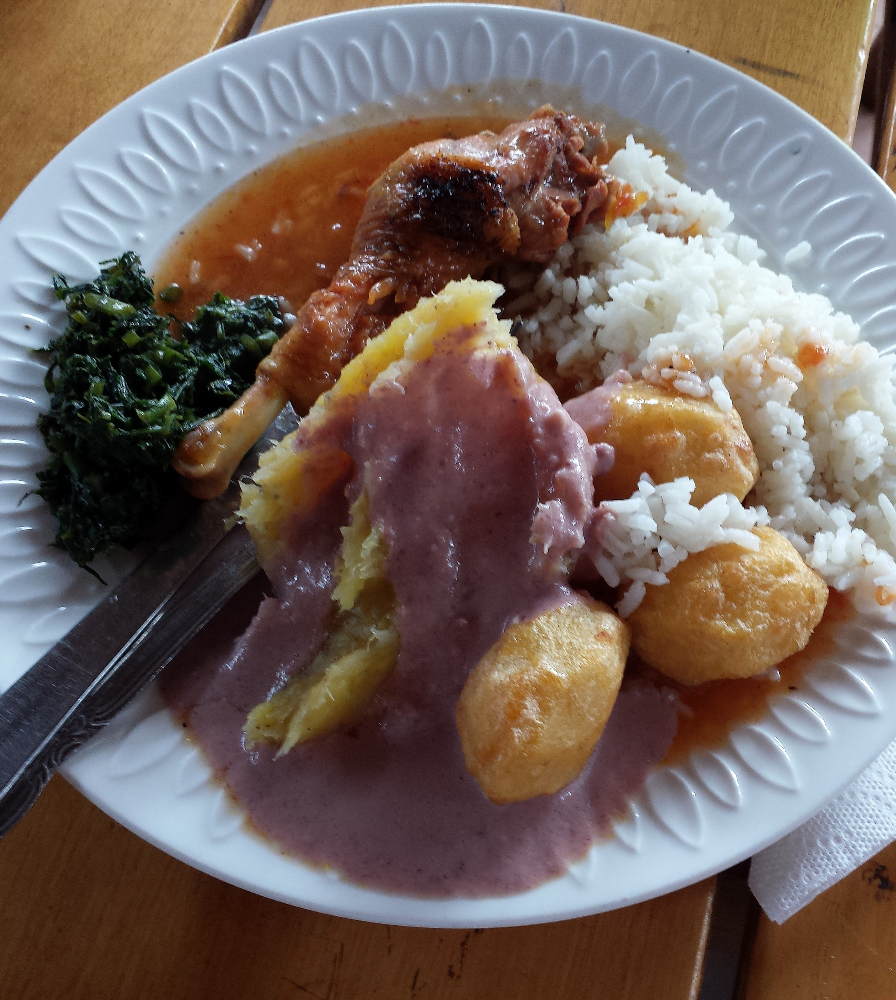
For a downtown party. Not so costly. Have a taste of all foods like matooke, rice, irish potatoes, chicken and vegatables of your choice
€ 7.80
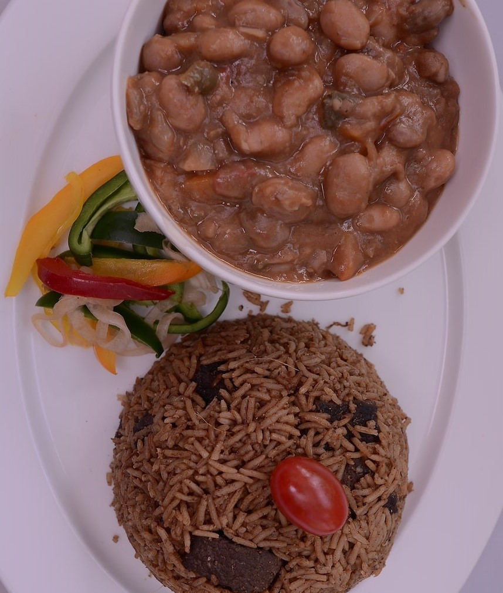
The brown color of the pilau comes from caramelizing the onions, browning the meat . Served with Beans on the side
€ 7.90
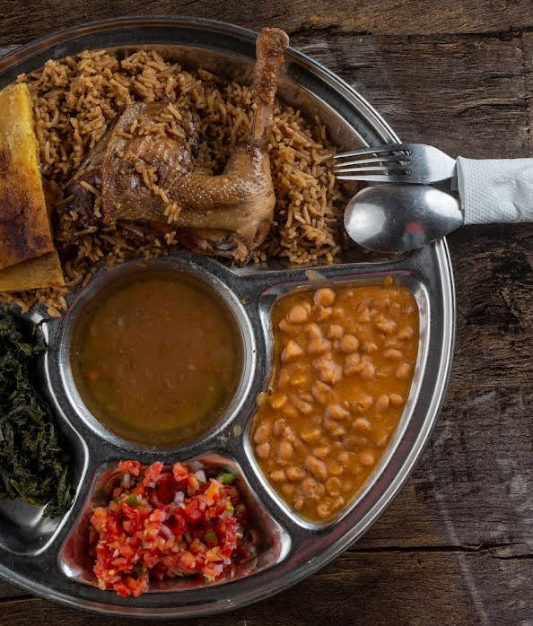
For a more uptown event. This platter has divisions for one to pick and separate all food types ordered in a neat fashion
€ 12.90
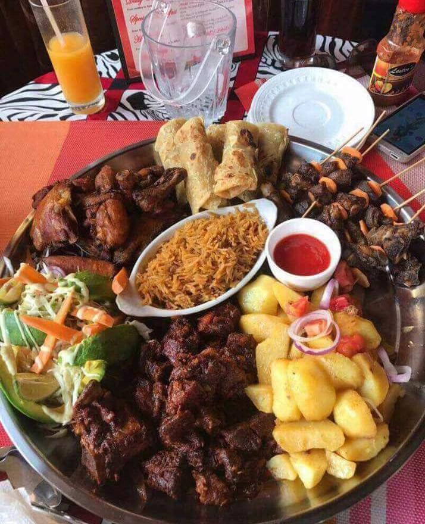
Lusaniya is a concept that embraces communal participation of Meal feasting where food is served on a platter (Lusaniya).The food on lusaniya consistutes both local & fast foods depending on your preference